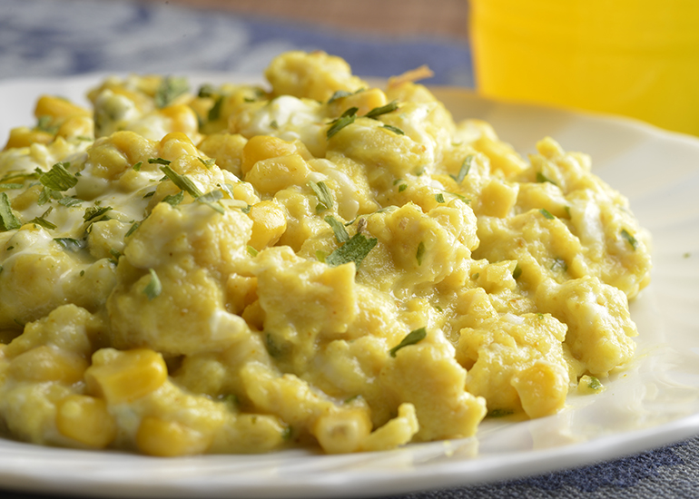

Ovo Mexido
Ingredientes
- 3 Ovos
- 3 Colheres de Sopa de Leite
- 2 Fatias de Queijo Mussarela
- Manteiga a Gosto
- Sal a Gosto
Modo de Preparo
- Quebre os 3 ovos e misture com o leite, até formar um caldo uniforme.
- Pique as fatias de queijo em pequenos pedaços e acrescente sobre a mistura.
- Coloque a manteiga na panela e a derreta em fogo alto, em seguida passe para fogo baixo e jogue a mistura.
- Não pare de mexer, tomando cuidado para não formar uma casca no fundo da panela.
- Espere até o ovo atingir o ponto e sirva acrescentando sal.
Vinagrete
Ingredientes
- 2 Cebolas Grandes Cortadas em Cubos
- 2 Tomates sem Semente e Cortados em Cubos
- 1 Pimentão Verde Cortado em Cubos
- 1/2 Xícara de Vinagre
- 1 Xícara de Azeite
- 1 Colher Rasa de Açucar
- Sal a Gosto
Modo de Preparo
- Em um recipiente com tampa misture todos os ingredientes.
- Deixe na geladeira por duas horas.
- Dica: O açúcar é pra suavizar o sabor, tirando a acidez do vinagre.
Brigadeiro

Ingredientes
- 1 Caixa de Leite Condensado
- 1 Colher de Margarina sem Sal
- 7 Colheres de Achocolatado
- Chocolate Granulado
Modo de Preparo
- Em uma panela funda, acrescente o leite condensado, a margarina e o chocolate em pó.
- Cozinhe em fogo médio e mexa até que o brigadeiro comece a desgrudar da panela.
- Deixe esfriar e faça pequenas bolas com a mão passando a massa no chocolate granulado.